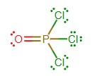
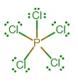
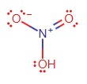
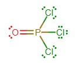
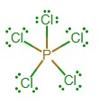
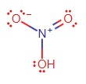

The main trick in the problem is to recongize the number of hydrogens on each carbon. Given that carbon in nearly all practical cases of organic chemistry only contains 4 bonds to abide by the Octet rule and its general bonding characteristics, you can assume the bonds associated to a unique atom (atoms other than hydrogen) by how many hydrogens are attached to a specific carbon. For example the (CH3)2CHCO2- part of the compound, we can see that because the carbon only has 1 hydrogen attatched to it that it must have 3 unique bonds. In this case, it is attached to two methyl groups on the left (methyl indicating a carbon with three hydrogens attatched) and a singular carbon on its right for a total of 3 unique bonds.
Same thing as the last question, A shows a hydrogen moving chemical bond to a different oxygen while B only showcases movement of electrons.
This question showcases a problem with the aformentioned behavior of resonance tending towards eliminating or minimizing charges within a structure as the answer is the one that gives oxygen a positive charge and leaves a positive charge on the carbonyl carbon. This rule however can be bypassed in the case where one of the atoms in significantly more electronegative than the other. In this case, oxygen is much more so than the carbonyl carbon, allowing it to attract the electrons within the bond for a longer duration than the carbon can, giving a possible resonance of the carbon with a positive charge and the oxygen with a negative one.
Within the structure, we can see that the only available pair of electrons capable of moving are those within the double bond, as all other bonds maintain the general structure of the compound. Given that there is a positiv charge on the tertiary carbon, the electrons in the double bond can move to form a double bond involving the carbon, thus leaving a positive charge on the primary carbon. To note is that this structure composes less of the compounds electron domain than the original structure, as tertiary carbons are more stable than primary carbons.
THe lone pair of electrons on the tertiary carbon are capable of forming a double bond to the right, which will then move the electrons in the original double bond to a lone pair on the primary carbon. As before, this structure is less favorable because tertiary carbons are more stable with charges than primary carbons.
The only pair of electrons able to move within the given structure is one of the lone pairs on the oxygen and given that the tertiary carbon is positively charged, the lone pair is capable of forming a double bond between the oxygen and that carbon, thus causing the oxygen to become positively charged. Since oxygen is highly electronegative, this structure is significantly less favorable than original structure.
We have the option between two electron groups that could form resonance being the double bond and the lone pair on the tertiary carbon. The sole electron group is more likely to form a resonance since it contains a negative charge, and since the only resonance that can form that won't violate an Octet is by creating a double bond to the right and pushing the original double bond to form a lone pair on the bottom right carbon. The picture given for the resonance structure is wrong as it should have the negative charge on the bottom right carbon instead of the tertiary carbon.
This question is the same as the last question where the lone pair moves down from the nitrogen to form a dobule bond between the nitrogen and the tertiary carbon, resulting in a positive charge on the nitrogen. It also serves this this resonance is less ecompassing than the original structure as nitrogen is much more electronegative than the tertiary carbon.
This question is just a swap of negative charge to the other oxygen and double bond from the other carbon to the carbon.
Both the oxygen and the nitrogen are capable of gaining and losing sole electron groups thus allowing for resonance between them both. This means that the double bond on the tertiary carbon is capable of jumping to the oxygen leaving the tertiary carbon positively charged and the oxygen negatively charged. The next resonance features the lone pair on the nitrogen jumping to form a double bond between it and the now positvely charged carbon.
Same concepts as previous problems.
We can see that the bond is between two carbon atoms, and that it is a double bond. The first bond will be a result of the carbons specific hybridizations based on number of bonding regions, while the pi bond is composed of the p-orbital only. This being said the pi bond is composed of 2 Cp, while the original bond is made up of two Csp2 bonds because each of the carbon is sp2 hybridized (each with 3 electron domains).
The bond is between two carbons, and it is a single bond meaning that we only need to consider the carbon atom's hybridizations based on electron domains. The carbon to the left is sp3 hybridized since it has 4 regions, while the carbon to the right is sp hyrbidized as it only has 2 regions.
The bond is between two carbons and it is a single bond, indicating that we should only consider the atom's hybridizations. Both carbons have 4 electron domains, meaning that both are sp3 hyrbidized, thus these orbitals comprise the bond.
While the compound given is in its skeletal form, the same ideas apply, with the bond being a single and between a hydrogn and a carbon atom. In this case, the hydrogen only has an s-orbital, thus there is no hybridization that occurs between an alternative p-orbital. The carbon on the other hand does have the p-orbital and the subsequent hybridization with its s-orbital, and with 4 electron domains, it becomes a sp3.
The bond is a single bond and is between a carbon and a nitrogen, so it will the orbitals creating the bond are based on the hybridization of both the carbon and nitrogen respectively. Both have 4 electron domains, so both have sp3 hybridizations. To note is that a lone electron pair is still viable and signifies the same general orbital structure as a bond.
We know that oxygen prefers to have two bonds to avoid a negative charge. This is because a charged species is inately more volatile than a neutral one and is more likely to react intra or intermolecularly. With such information, we can make the assumption that if the compound doesn't have a negative charge, then it has double bonds within the structure. For each of the structures, you can also count the number of electrons cumulatively within the molecule and determine if the amount in the structure proposed is the same.
 




